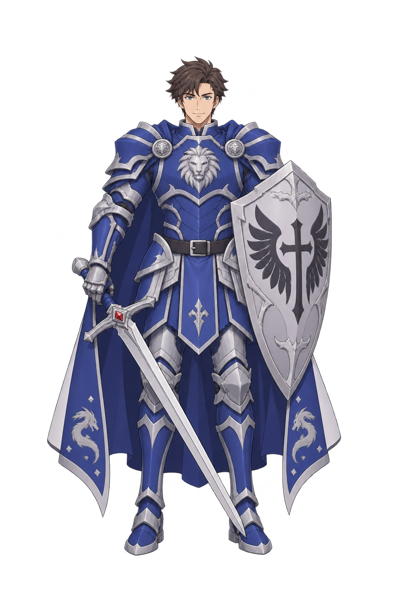
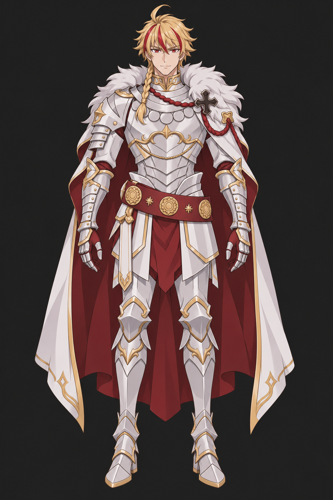

발로르 · 새 정면 v11원본


C6 · 금발·흰 판금 · 정면 v1원본


새 정면1장 · 이전 발로르 이미지 입력0장 · 전체 그림체 사용자 검토 전
완성본으로 통과시키지 않았습니다. 위·좌우 여백과 방패 크기가 제작 기준에 미달합니다. 이번 출력 뒤 자동 추가 생성은 중단했습니다. 이미지 크기·바이트는 반환 원본 그대로입니다.


화면에서만 표시 높이를 맞춥니다. 원본의 크기를 바꾸거나 확대 저장하지 않았습니다. C6와 같은 그림체인지 얼굴·선화·머리·명암·재질을 전체로 비교합니다.